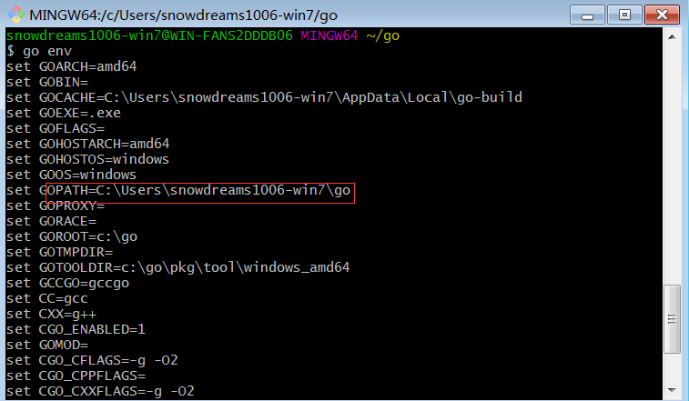
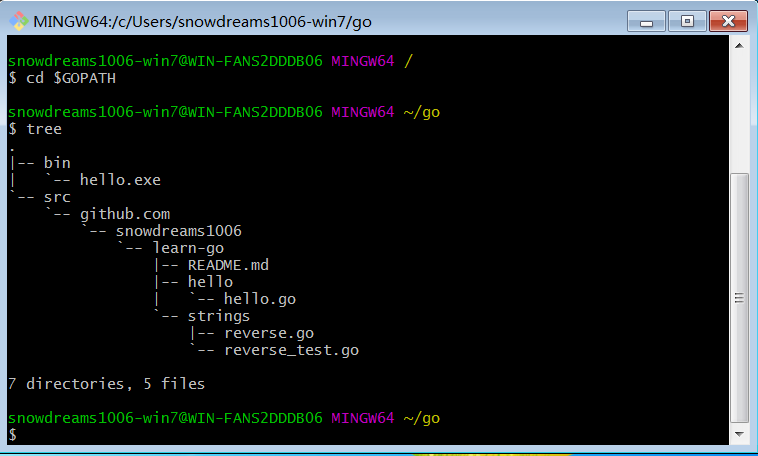
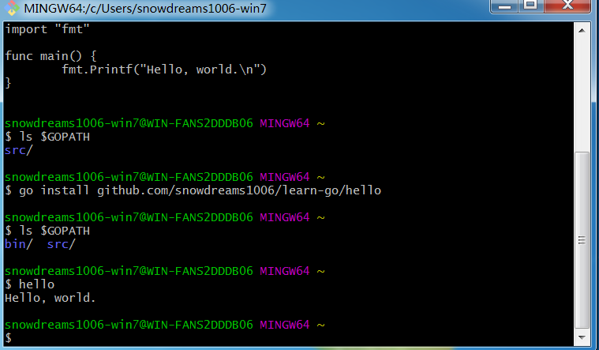
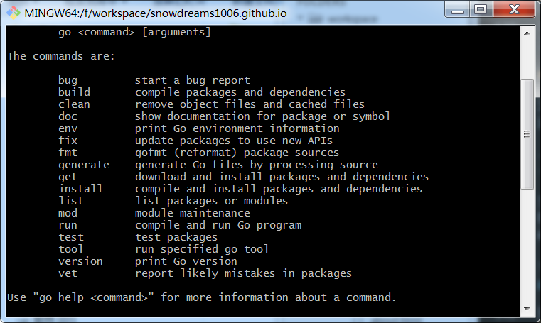

1. 工作空间
搭建好 Go 的基本环境后,现在可以正式开始 Go 语言的学习之旅,初学时建议在默认的 GOPATH 工作空间规范编写代码,基本目录结构大概是这个样子.
.
|-- bin
| `-- hello.exe
|-- pkg
| `-- windows_amd64
| `-- github.com
| `-- snowdreams1006
| `-- learn-go
| `-- strings.a
`-- src
`-- github.com
`-- snowdreams1006
`-- learn-go
|-- README.md
|-- hello
| `-- hello.go
`-- strings
|-- reverse.go
`-- reverse_test.go
Go 相关的代码保存在工作空间中,而工作空间目录默认情况下是 GOPATH 环境变量所指向的目录(例如: GOPATH=C:\Users\snowdreams006-win7\go).
工作空间下一般应包括三个一级子目录,分别是 src,pkg 和 bin 目录,其中最重要的就是 src 源码目录,其余两个目录都是派生目录.
src目录是源代码目录,是平时写代码的地方.pkg目录是包对象目录,里面的文件大多以.a为后缀名,Go工具自动处理,暂时不用关心.bin目录是可执行命令目录,是最终产出的文件,例如Windows平台一般会生成.exe文件.
如果你刚刚安装
Go语言或者不是默认形式安装的Go,打开命令行窗口运行go env查看GOPATH那一项,GOPATH指代的目录就是工作空间.

1.1. 体验别人的 Go 命令
默认情况下,刚刚安装完毕的 Go 环境并不会自动创建工作空间目录,可以手动创建也可以运行别人的 Go 命令时顺便创建.
snowdreams1006-win7@WIN-FANS2DDDB06 MINGW64 /
# 初始时工作空间并未创建
$ ls $GOPATH
ls: cannot access 'C:\Users\snowdreams1006-win7\go': No such file or directory
snowdreams1006-win7@WIN-FANS2DDDB06 MINGW64 /
# 下载别人的 `Go` 命令顺便创建了工作空间
$ go get github.com/snowdreams1006/learn-go/hello
snowdreams1006-win7@WIN-FANS2DDDB06 MINGW64 /
# 已经按照标准目录结构创建完毕,目前有src和bin目录就足够了
$ ls $GOPATH
bin/ src/
运行完 go get github.com/snowdreams1006/learn-go/hello 命令后,工作空间目前已近乎标准目录.
如果
go get命令半天没什么反应,不要着急,说不定正在下载,只是比较慢而已,如果想要看到下载过程,可以添加额外参数:go get -u -v

可以看出,go get 命令下载了 hello 命令所依赖的文件并生成 bin/hello.exe 可执行文件,现在终于可以说一声 Hello world!
snowdreams1006-win7@WIN-FANS2DDDB06 MINGW64 ~/go
$ hello
!oG,olleH
这个是啥?怎么不是传说中的 Hello World ?

不管怎么说,创建工作空间的目的已经达到了,不是吗?
聪明的你,或许已经发现输出的语句的确不是
Hello World而是Hello Go反过来写!
1.2. 打造自己的 Go 命令
如果手头上没有 Go 项目或者说想要从零开发 Go 项目的话,那么只能手动创建工作空间了.
我们已经知道了工作空间的规范,但是现在涉及到自定义项目,同样需要确定项目的规范.
一般说来,项目需要唯一id用于区分其他可能出现的同名项目,也就是命名空间的概念.
作为个人开源项目,同广大的 Go 项目规范一样托管到 github.com 网站,因此命名空间 github.com/user 作为基本路径.
重要区别:
Go的命名空间(即基本路径)是域名正写:github.com/snowdreams1006,如果是其他语言,命名空间可能就是域名反写形式:com.github.snowdreams1006.
snowdreams1006-win7@WIN-FANS2DDDB06 MINGW64 ~
# 当前并未创建过工作空间
$ ls $GOPATH
ls: cannot access 'C:\Users\snowdreams1006-win7\go': No such file or directory
snowdreams1006-win7@WIN-FANS2DDDB06 MINGW64 ~
# 在工作空间下创建 `learn-go` 项目
$ mkdir -p $GOPATH/src/github.com/snowdreams1006/learn-go/hello
snowdreams1006-win7@WIN-FANS2DDDB06 MINGW64 ~
# 在 `learn-go` 项目下创建 `hello.go` 文件
$ vim $GOPATH/src/github.com/snowdreams1006/learn-go/hello/hello.go
snowdreams1006-win7@WIN-FANS2DDDB06 MINGW64 ~
# `hello.go` 文件内容,输出 `Hello world`
$ cat $GOPATH/src/github.com/snowdreams1006/learn-go/hello/hello.go
package main
import "fmt"
func main() {
fmt.Printf("Hello, world.\n")
}
现在 Go 语言版的 Hello World 已经编写完毕,接下来让我们编辑输出并安装 hello 文件命令吧!
在命令行窗口运行 go install github.com/snowdreams1006/learn-go/hello 命令会在工作空间的 bin 目录下生成 hello.exe 可执行文件.

现在命令行窗口不负众望,输出了期待已久的 Hello World!

1.3. 简单讲解下 Go 命令
无论是下载别人的远程代码还是自己从零编写代码,在命令行中都用到了相应命令,go get 和 go install 等.
go get: 下载远程代码包,如果本地已安装,则执行逻辑退化为go install.go install: 安装本地依赖包,如果本地没有相关依赖,则报错提示无法找到相关依赖包.
当然 Go 支持的常用命令远远不止这两个,直接输入 go 自然会提示有哪些命令可供使用,如果想要查询具体某一个命令的帮助文档,则输入 go help <command> 即可,例如 go help get

这些命令比较简单,不用翻译也能猜出八九不离十,故此不浪费时间一一阐述.
下面直接上代码亲测运行一遍相关命令.
1.3.1. go get 下载代码包
go get github.com/golang/example/hello 下载 Go 官方示例的 hello 代码包.
snowdreams1006-win7@WIN-FANS2DDDB06 MINGW64 ~/go
$ tree
.
|-- bin
| `-- hello.exe
`-- src
`-- github.com
`-- snowdreams1006
`-- learn-go
`-- hello
`-- hello.go
6 directories, 2 files
snowdreams1006-win7@WIN-FANS2DDDB06 MINGW64 ~/go
$ go get github.com/golang/example/hello
snowdreams1006-win7@WIN-FANS2DDDB06 MINGW64 ~/go
$ tree
.
|-- bin
| `-- hello.exe
`-- src
`-- github.com
|-- golang
| `-- example
| |-- LICENSE
| |-- README.md
| |-- appengine-hello
| | |-- README.md
| | |-- app.go
| | |-- app.yaml
| | `-- static
| | |-- favicon.ico
| | |-- index.html
| | |-- script.js
| | `-- style.css
| |-- gotypes
| | |-- Makefile
| | |-- README.md
| | |-- defsuses
| | | `-- main.go
| | |-- doc
| | | `-- main.go
| | |-- go-types.md
| | |-- hello
| | | `-- hello.go
| | |-- hugeparam
| | | `-- main.go
| | |-- implements
| | | `-- main.go
| | |-- lookup
| | | `-- lookup.go
| | |-- nilfunc
| | | `-- main.go
| | |-- pkginfo
| | | `-- main.go
| | |-- skeleton
| | | `-- main.go
| | |-- typeandvalue
| | | `-- main.go
| | `-- weave.go
| |-- hello
| | `-- hello.go
| |-- outyet
| | |-- Dockerfile
| | |-- containers.yaml
| | |-- main.go
| | `-- main_test.go
| |-- stringutil
| | |-- reverse.go
| | `-- reverse_test.go
| `-- template
| |-- image.tmpl
| |-- index.tmpl
| `-- main.go
`-- snowdreams1006
`-- learn-go
`-- hello
`-- hello.go
25 directories, 35 files
snowdreams1006-win7@WIN-FANS2DDDB06 MINGW64 ~/go
$
原本 $GOPATH/src 源码目录只有我们自己的 github.com/snowdreams1006/learn-go 项目,获取远程 golang/hello 代码包后多了一大堆源码文件.
真的是神奇的操作,其余语言调用开源工具一般都是作为依赖放到非源码目录,Go 直接放到正在编写的源码目录,看起来第三方源码像是我们自己写的一样,只不过用命名空间区分开了而已!

1.3.2. go test 测试代码包
Go 自带轻量级的测试框架,测试文件命名是 xxx_test.go ,文件内的方法签名是 TestXXX .
go test github.com/golang/example/stringutil 测试 stringutil 代码包,是因为包内存在测试文件 reverse_test.go
snowdreams1006-win7@WIN-FANS2DDDB06 MINGW64 ~/go
$ go test github.com/golang/example/stringutil
ok github.com/golang/example/stringutil 0.342s
1.3.3. go install 安装代码包
go install github.com/golang/example/hello 安装代码包,运行可执行文件 hello 输出 Hello, Go examples!
snowdreams1006-win7@WIN-FANS2DDDB06 MINGW64 ~/go
$ go install github.com/golang/example/hello
snowdreams1006-win7@WIN-FANS2DDDB06 MINGW64 ~/go
$ hello
Hello, Go examples!
1.3.4. go build 编译代码包
上述命令我们都是在 golang/example 项目下进行演示的,不能厚此薄彼,下面这两个命令还是演示我们自己手写的 hello 命令文件吧!
首先切换到 hello 目录下,这样省的输入一长串的路径,在当前目录下运行 go 命令可以省略文件路径.
snowdreams1006-win7@WIN-FANS2DDDB06 MINGW64 ~/go
# 切换到 `learn-go` 项目的 `hello` 目录
$ cd $GOPATH/src/github.com/snowdreams1006/learn-go/hello
snowdreams1006-win7@WIN-FANS2DDDB06 MINGW64 ~/go/src/github.com/snowdreams1006/earn-go/hello
$ ls
hello.go
snowdreams1006-win7@WIN-FANS2DDDB06 MINGW64 ~/go/src/github.com/snowdreams1006/earn-go/hello
# go build 省略文件路径表示在当前目录下进行编译,输出文件也是当前目录下
$ go build
snowdreams1006-win7@WIN-FANS2DDDB06 MINGW64 ~/go/src/github.com/snowdreams1006/earn-go/hello
$ ls
hello.exe* hello.go
snowdreams1006-win7@WIN-FANS2DDDB06 MINGW64 ~/go/src/github.com/snowdreams1006/earn-go/hello
# 此时直接运行 `hello` 命令,运行的的是 `$GOPATH/bin` 目录下的命令而不是当前目录下的 `hello`
$ hello
Hello, Go examples!
snowdreams1006-win7@WIN-FANS2DDDB06 MINGW64 ~/go/src/github.com/snowdreams1006/learn-go/hello
$ ./hello
Hello, world.
上述演示结果,展示了切换到当前目录下可以直接省略代码包路径,默认输出的可执行文件也由原先的 $GOPATH/bin 目录变成当前目录.
直接运行 hello 命令输出的结果是原先的 $GOPATH/bin/hello 命令而不是当前目录下的 hello,至于为什么如此,暂时不太理解.
当然想要运行当前目录下的 hello.exe 命令文件也很简单,指定路径即可: ./hello

1.3.5. go run 运行代码包
go build 命令或者 go install 命令都会生成可执行二进制文件,然后运行该二进制文件才能输出命令结果.
go run 就是一步到位的命令,不用生成文件直接输出命令的执行结果,有时候这种方式也很有用!
snowdreams1006-win7@WIN-FANS2DDDB06 MINGW64 ~/go/src/github.com/snowdreams1006/learn-go/hello
$ ls
hello.go
snowdreams1006-win7@WIN-FANS2DDDB06 MINGW64 ~/go/src/github.com/snowdreams1006/learn-go/hello
$ go run hello.go
Hello, world.
snowdreams1006-win7@WIN-FANS2DDDB06 MINGW64 ~/go/src/github.com/snowdreams1006/learn-go/hello
$ ls
hello.go
值得注意的是,go run 后面紧跟着的是文件名,不能像 go build 那样省略包路径,否则会报错.

1.4. Go 基本环境小结
默认安装的 Go 省心省力,自动帮我们设置好相关的环境变量,至于这些变量是干嘛用的以及怎么自定义修改,建议初学时不要深究,先搭建好基本的开发环境再说.
go env 命令可以输出 Go 的相关配置信息,GOROOT 是 Go 的安装目录,GOPATH 是 Go 的工作空间目录,这是 Go 本身最基本的配置信息.
如果不太了解这部分内容,可以翻看上一篇文章,这里就不详细阐述了.
Go 的工作空间下面有 src ,bin 和 pkg 三个平行目录,其中 src 下面才是我们真正编写代码的目录.
Go 语言相关的项目既然都放在 src 目录下就有一定的命名规范,参考 github.com/snowdreams1006/learn-go 和 github.com/golang/example 这种形式.
测试 Go 语言的安装环境以及进行简单的命令验证,这些操作本身比较简单,用不着强大的 IDE ,但是学习 Go 语言如果没有 IDE 的辅助,那么很难想象会是什么样的局面.
因此,下一节将开始介绍 Go 开发的 IDE 环境配置,感觉离工程化开发又迈进一步呢!